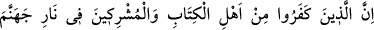
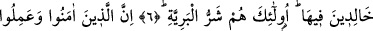
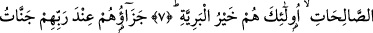
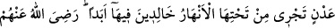
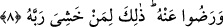

HALKIN EN HAYIRLILARI
6. Ehl-i kitap ve müşriklerden olan inkârcılar, içinde ebedî olarak kalacakları
Cehennem ateşindedirler. İşte halkın en şerlileri onlardır.
7. İman edip sâlih ameller işleyenlere gelince, halkın en hayırlısı da onlardır.
8. Onların Rableri katındaki mükâfatları, zemininden ırmaklar akan, içinde
devamlı olarak kalacakları Adn cennetleridir. Allah kendilerinden hoşnut olmuş,
onlar da Allah’tan hoşnut olmuşlardır. Bu söylenenler hep Rabbinden korkan (O’na
saygı gösterenler) içindir.
“Ehl-i kitap ve müşriklerden inkârcılar, içinde ebedî olarak kalacakları Cehennem
ateşindedirler.” cümlesi, onların dünyadaki hallerinin beyân edilmesinin ardından,
âhiretteki halllerini beyân etmektedir. Bu âyet-i kerimede, “müşrik”lerin zikredilmesi,
hükmün –Peygamberliğin delillerinin sâdece onların kitaplarında olmasına parelel
olarak- sırf ehl-i kitaba has olduğunun zannedilmemesi içindir.
“Kâfirler”in Cehennem ateşinde olmalarının mânâsı, Onların kıyamet günü oraya
girecekleri anlamınadır. Âyetteki hükmün, isim cümlesi ile ifâde edilmesi, haberin
kesinlikle gerçekleşecek olduğuna işâret etmek içindir.
Bunun yanında aynı âyeti, kâfirlerin şu anda o ateşte oldukları şeklinde de anlamak da
mümkün dür. Bu takdirde ya Cehenneme girmeyi gerektiren durumları, Cehennemde
bulunmaları durumuna indirilmiş, ondan dolayı böyle söylenmiştir. Ya da onların içinde
bulundukları küfür ve mâsiyetler Cehennem ateşinin bizzat kendisidir, ancak bu dünyada
ârızî bir biçimde zuhûr etmektedir. Âhıret hayatında dünya hayatındaki şeklini bırakacak
ve gerçek şekli ile zuhûr edecektir” deriz.
Ehl-i kitap ve müşriklerin kâfir oldukları için azab yurduna ebedi bir biçimde girecek
olmaları, azablarının “keyfiyet” itibarı ile farklı olacağı yargısı ile çelişmez. Çünkü
Cehennem dereke derekedir ve azabı çeşit çeşittir. Konuyu biraz açalım: Müşrikler,
yaratıcıyı, peygamberliği, kıyameti, inkâr ediyorlardı. Ehl-i kitap ise sâdece Hz.
Peygamberin (s.a.) peygamberliğini kabul etmiyorlardı. Dolayısı ile ehl-i kitabın